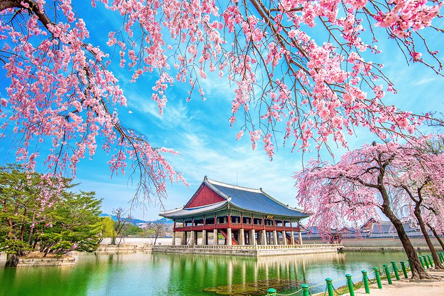

Hello, My name is Jemrose.
Personal Information
- Name: Jemrose D. Bautista
- Age: 19 yrs old
- Date of birth: December, 04 2002
- Religion: Roman Catholic
- Birthplace: Calamba City
Favorites
- Sport: Volleyball and badminton
- Food: Adobo and Sinigang
- Desert: Icecream
- Anime: Doraemon and Dragon Ball
- Song: Chasing pavements by Adele
- Cartoon character: Hello Kitty
How do I see myself 5 years from now?
- I see myself fiver years from now I already achieved my first goal which to finish my education, I am a full degree holder. In these same years I have been slowly achieving my other goals in life. I can do the things I used to dream of. I also got a stable job position in a respectable company and with a good salary where I can provide for the needs and wants of my family. Maybe after five years I also have the love of my life and I also see that I am happier and free. Also, I am repaying the sacrifices and hard work of my parents.
My Motivation
- My motivation to do all this and strive better is myself and family so I can do my things I can’t do now. For the future we will experience a good life. Because I want to fulfill all my parents' dreams. Of course God is one of my motivations because he gives me guidance and strength.
My Friends
- I have a lot of friends but the ones I always have with are my cousins who are also considered as my bestfriends because they're always at my back through ups and downs. They don’t let me down with any problem I face. They are also the ones I talk to about my problems and secrets. I am happy when they are with me because I can show who I really am and I feel free. Their names are Angela, Lj, Tin, Ana, Arlene, Jermaine, Mariz, Dheyshann, John Lloyd, Wilbert, Gilbert, Raymart and MarLlon.
My most memorable moments
- The most memorable moments in my life were when my family and I went on vacation to Bicol because we always ate seafoods and bathed in the river. I experienced a peaceful and simple life. It is very rich in vegetables and seafood. It was so much fun to be with my cousins and I even got to know them so much. I like the time I'm there because I just relax and I don't feel bored because there are many things to do.
My most embarassing moments
- In my life the most embarrassing event I ever did was I was alone on the first day of school I was late and I still don't know where my room is. While the teacher was lecturing, I came in and everyone looked at me, I immediately sat down. After that the teacher called all our names to check the attendance, did not call my name so I asked immediately. The reason I wasn't called was because I entered the wrong room.
My Dream Destinations
- Local:
- I want to go to Cebu because I want to explore and adventure in the mountains and under the sea, Cebu city had a perfect tourist spot for that. Cebu is brimming with wonders of nature such as the pristine white sand beaches, whale sharks and sardine run that you can swim with, breathtaking hills and mountains, historic sites, and of course, delicious food!

- Foreign:
- In foreign places, South korea is my dream destination because South Korea offers everything a traveler could want in a destination. I want to know their history and wonderful culture, taste their amazing food, friendly people, and see an excellent tourism infrastructure.